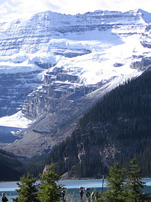

The Seven Wonders of Canada
The Canoe | The Igloo | Niagara Falls | Old Québec City | Pier 21, Halifax | Prairie Skies | The Rockies
The Rockies, British Columbia / Alberta
This Wonder of Canada almost speaks for itself. From the brilliant blue of Lake Louise, the Valley of the Ten Peaks, towering Mount Robson, Moraine Lake, not to mention the gorgeous Banff Springs Hotel… all these magnificent jewels set brilliantly in one, whopping "wonder." The Canadian Rockies are distinct from the American Rockies as they have been been very heavily glaciated, resulting in sharply pointed mountains separated by wide, U-shaped valleys gouged by glaciers, whereas the American Rockies are more rounded. That's why, even though the Rocky Mountain Range runs from Northern British Columbia to New Mexico, we can claim our very own "Rockies" as a distinct wonder of Canada.